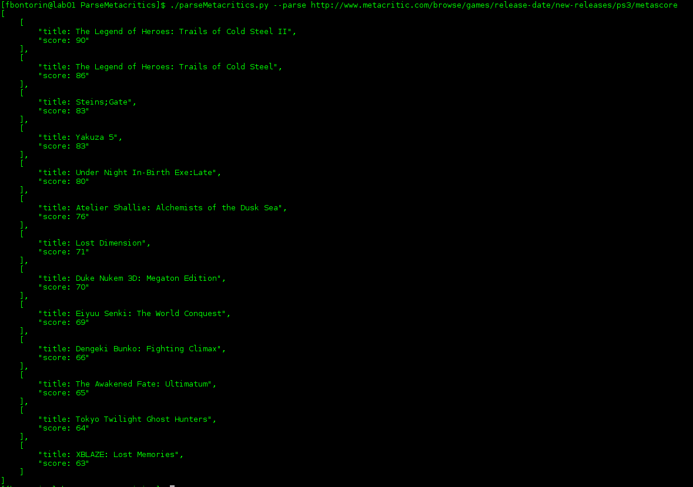
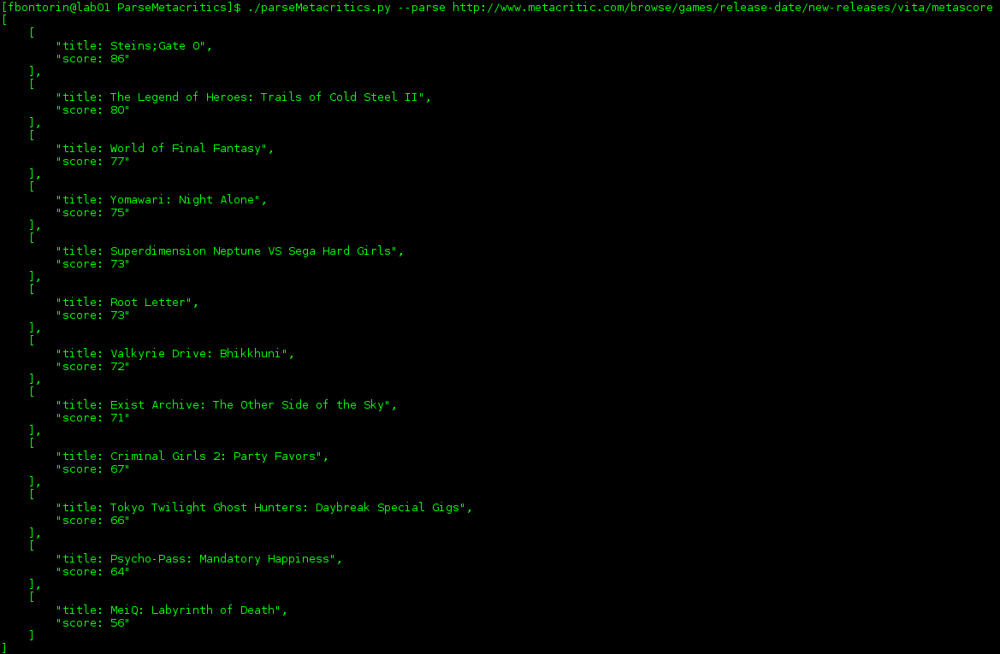
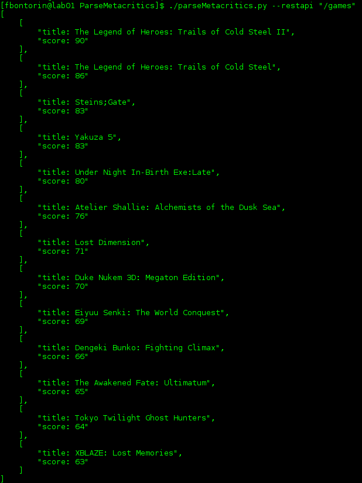
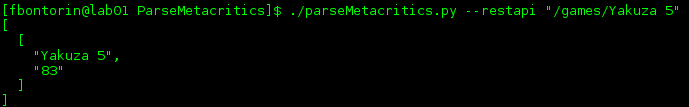

Unit Tests¶
Parse HTML¶
[-p] or [–parse]
This option will parse an URL from Metacritic’s returning a JSON of the game titles and its related scores.
PS3
PS Vita

Rest API¶
[-r] or [–restapi]
This functionality is ONLY for PS3 games, it returns all PS3 titles and scores or information about a specific game.
/games
/games/Yakuza 5
